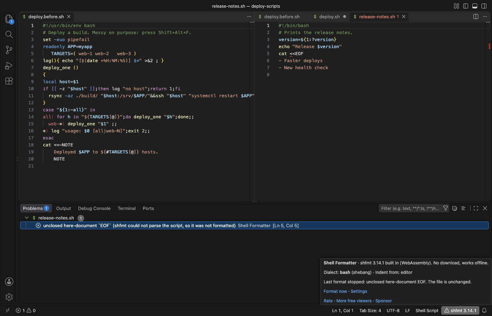

Open files in VS Code and Cursor / Code and APIs
Find a bash or zsh syntax error in VS Code
VS Code colours shell scripts but does not parse them, so an unclosed quote, here-document or if shows up only when the script runs. Shell Formatter for Bash & Zsh parses the script with shfmt each time you format it. If the script does not parse, the file stays unchanged and the Problems panel shows the error with its line and column. Formatting is free, and Zovo Pro (USD 19 once) checks every script in a folder, with 3 free tries.
Free, MIT license. Extension ID zovo.zovo-shell-formatter, version 0.1.1. Needs VS Code 1.90.0 or newer.

Steps in VS Code
- Install Shell Formatter for Bash & Zsh from the Marketplace, or press Ctrl+P (Cmd+P on macOS) and run
ext install zovo.zovo-shell-formatter. - Open the script and press Shift+Alt+F (Shift+Option+F on a Mac). If VS Code asks which formatter to use, pick Shell Formatter.
- If the script parses, it is formatted. If not, it stays as it is and the Problems panel shows the error at the line and column shfmt reports.
- Click the problem to jump to it. The shfmt 3.14.1 item in the status bar shows a warning, and its tooltip repeats the error.
- Fix the line and press Shift+Alt+F again. The problem entry is cleared when you edit the file.
- To check on every save, run "Shell Formatter: Turn On Format on Save for Shell Scripts".
Where Zovo Pro saves time
Format Document, Format Selection, format on save, the syntax errors in Problems, the status bar menu and .editorconfig support are free, with no sign-in. shfmt 3.14.1 ships inside the extension as WebAssembly, so nothing is downloaded and it works offline.
One open script is easy. A repository with dozens of scripts is not. Format All Shell Scripts in a Folder finds every script in a folder and its subfolders, by name or by a shebang line that names a shell, and says how many would change. Pick "Show the report only" to change nothing and get a Markdown list of every script, where a script that does not parse is marked "not formatted" with its error and line. The other Pro tools are Formatting Check with a Patch File and Minify a Script to a Copy.
With Format All Shell Scripts in a Folder (Zovo Pro)
- Right-click a folder in the Explorer and pick "Zovo Pro: Format All Shell Scripts in a Folder", or pick it in the shfmt status bar menu.
- Pick "Show the report only" to change nothing, or format the scripts that would change.
- A try counts only when the tool gives a result. A folder with no shell scripts uses none.
Format All Shell Scripts in a Folder works 3 times on your computer before it asks for a license, and a try counts only when you get a result. Opening a file shows no popup and no countdown.
Zovo Pro costs USD 19 once. It is not a subscription, and it turns on the Pro tools in every Zovo extension, not only Shell Formatter for Bash & Zsh. After a card payment (Stripe) your license key shows on the next page. In VS Code, run "Zovo Pro: Enter Zovo Pro license key" from the Command Palette and paste it. The key is checked on your computer, with no network call. With GitHub Sponsors, pick the "$19 one time" tier, then run "Zovo Pro: I already paid: unlock with GitHub Sponsors" and sign in with the same GitHub account. With PayPal, send USD 19 with "Zovo Pro" in the note and the key comes by email within a day.
A team of 5: USD 59 once, by card or by PayPal. Every rule and every Pro tool is on the Zovo Pro page.
Steps in Cursor, Windsurf or VSCodium
- Open the Extensions view with Ctrl+Shift+X (Cmd+Shift+X on macOS).
- Search for
zovo.zovo-shell-formatterand click Install. Cursor, Windsurf and VSCodium install from Open VSX, where it is published aszovo/zovo-shell-formatter. - If your editor has no gallery, download the .vsix from the Open VSX page and run "Extensions: Install from VSIX...".
- Then use it the same way as in VS Code.
What Shell Formatter for Bash & Zsh handles
- bash, POSIX sh, mksh, bats and zsh. The dialect comes from the shebang line, then the file name, else bash.
- Unclosed quotes, here-documents,
ifandcaseblocks, and other errors the shfmt parser finds. - Windows line ends, which stay CRLF.
What it does not do
- The check runs when you format, not while you type.
- It finds syntax errors only. It does not warn about bugs such as unquoted variables. ShellCheck does that.
- Zsh support in shfmt is new. A zsh script that shfmt cannot parse gets an error even if zsh runs it.
- Files over 10 MB (
shellFormatter.maxFileMB) are not formatted, and a message says why.
Other options
- bash -n.
bash -n script.shreads the script without running it and prints syntax errors. One file at a time, from a terminal. - ShellCheck. A free linter that finds syntax errors and many common bugs, with a VS Code extension that marks them as you type.
Install counts and Open VSX status were checked on 13 November 2026. Descriptions in quotes are the extensions' own.
Questions
Does a broken script get half formatted?
No. If shfmt cannot parse the script, the file stays exactly as it was.
Why did the error go away before I fixed it?
The entry is cleared as soon as you edit the file. Format again to check again.
Does it need shfmt installed?
No. shfmt 3.14.1 is built into the extension as WebAssembly. Nothing is downloaded.
Does it work in Cursor or Windsurf?
Yes. Cursor, Windsurf and VSCodium install extensions from Open VSX. Search for the extension in their Extensions view and install it there.
More about Shell Formatter for Bash & Zsh
Read the Shell Formatter for Bash & Zsh page for every feature and setting, or the source code on GitHub.
Related guides
- Format a bash or zsh script in VS Code
- Use .editorconfig so shell scripts format the same everywhere
- Format shell scripts but leave Dockerfiles and .env files alone
- Open a SARIF file in VS Code
Zovo Pro and support
Zovo Pro: USD 19 once, every Zovo viewer. It turns on the Pro tools in this extension and in the other Zovo extensions you use. The free features stay free.
After a card payment your license key shows on the next page. Paste it with the command "Zovo Pro: Enter a key".
You can also support the work with no Pro:
Need your format supported?
Open a format request with a sample file, and I reply there whether it can be done. For USD 299 once, through this GitHub Sponsors tier, I add your file format or a missing feature to this extension, with tests, within 7 days.